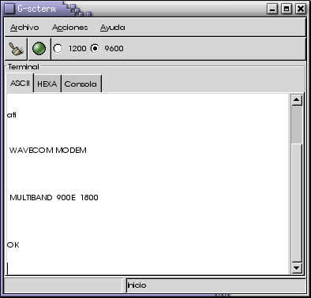

MOTIVACIÓN
Los terminales serie siempre me han gustado mucho, porque me permiten conectarme con el hardware que desarrollo.
Me he propuesto aprender a programar con las librerías de GNOME2/GTK+2.0
y qué mejor manera de hacerlo que comenzar a programar un terminal de comunicaciones serie.
Este programa es la base para:
- Aprender a hacer una aplicación para GNOME-2
- Aprender a manejar el puerto serie
- Desarrollar un programa gráfico más avanzado para comunicarse por el puerto serie
Yo personalmente lo voy a utilizar de base para hacer programas de control de Robots.
Aqui puedes ver una captura de pantalla de la version 0.2-2-alfa de G-SCTERM:

AUTOR: Juan González Gómez (a.k.a. Obijuan)
LICENCIA: GPL
DESCRIPCIÓN
Se trata de un terminal de comunicaciones que muestra en la pantalla todo lo que se recibe por el puerto serie y
envía por este todo lo que el usuario teclea. Además permite seleccionar entre las velocidades de 1200 y 9600
Baudios y cambiar el estado del DTR, señal que se suele utilizar para controlar el hardware. En el caso de la
tarjeta CT6811, la señal DTR se usa para hacer un reset (equivalente a la pulsación del botón de Reset).
Está desarrollado usando las librerías de GNOME2/GTK+2.0, y lo más interesante, el interfaz se ha diseñado con
GLADE-2. Con esta herramienta el interfaz se almacena en un fichero XML que es
leído por la aplicación G-SCTERM durante el arranque, generándose el interfaz a partir de ese fichero. Esto permite
independizar totalmente el interfaz del programa fuente.
Para las comunicaciones serie se utiliza la Librería
SERCOM .
PLATAFORMA
Linux, aunque debido a que está desarrollado con GTK+, es portable a Windows, sin embargo todavía no se ha comenzado.
DOWNLOAD
Los pasos para ejecutarlo son los siguientes:
- Bajar el fichero g-scterm-xx.tgz
- Descomprimir el paquete (tar vzxf g-scterm-xx.tgz)
- Acceder a las fuentes (cd g-scterm-xx)
- Compilar (make)
- Para ejecutar teclear: ./g-scterm
NOTICIAS
20/Agosto/2002: Version 0.2-2-alfa de G-scterm
-Corregidos BUGS reportados por Ayose Cazorla León (zubzet@yahoo.es)
-Terminal ASCII y HEXADECIMAL
-Consola para informar de errores
-Gestión básica de los errores
13/Agosto/2002: Liberada version inicial 0.1 de G-scterm
-Terminal de comunicaciones mínimo, para GNOME-2
-Velocidades soportadas: 1200 y 9600
-Compilado para el dispositivo /dev/ttyS0 (COM1)
-Control de la señal DTR